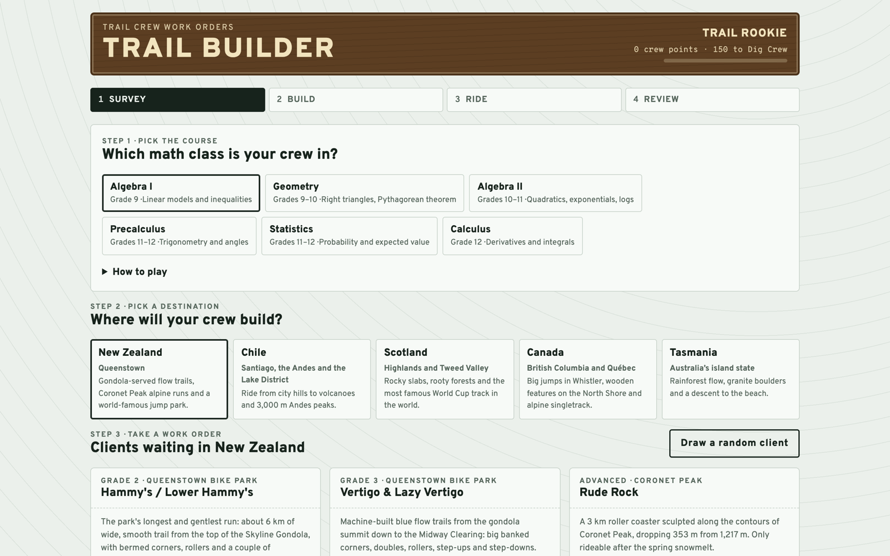

Trail Builder
A trail-crew game: students take a client's work order, solve the math for every trail segment they build, and have to land exactly on the finish elevation within budget.

overview
Students run a trail crew building real-world-inspired trails in New Zealand, Chile, Scotland, Canada and Tasmania. A client sets the budget, the trailhead elevation and where the trail must finish. Every segment bought from the shop needs its math solved before it goes in, then a test rider rides the finished trail — and flats and washouts cost money.
The same game runs at six levels: Algebra I (linear models and inequalities), Geometry (right triangles and the Pythagorean theorem), Algebra II (quadratics, exponentials, logs), Precalculus (trigonometry and angles), Statistics (probability and expected value) and Calculus (derivatives and integrals).
details
- Survey — take a work order with a budget, a trailhead elevation and a finish.
- Build — buy segments and solve the math for each one; the trail must end exactly at the finish elevation.
- Ride — a test rider rolls the die on every segment rated 3 or higher.
- Review — score up to 100 points plus a bonus, name the trail, explain why it works, and add it to the trail network.